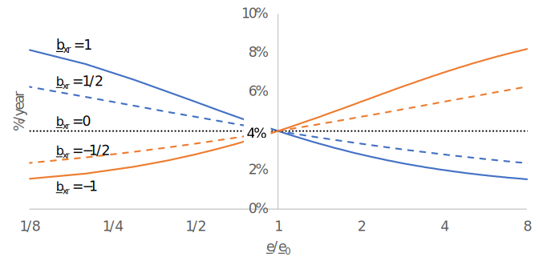

Dynamics
In between runs of the linear goal program, the dynamic parameters and intermediate variables are updated. After the dynamic parameters have been updated, the linear goal program is run for the subsequent year.
In the equations below, a subscript $+1$ indicates the next-year's value, and a subscript $-1$ the previous year's value. An underline indicates an exogenous parameter, while an overline is a dynamic parameter.
One of the most important variables in the Macro model is potential output for a sector $i$, $\overline{z}_i$. Realized output $g_i$ is equal to potential output multiplied by capacity utilization $u_i$.
Ordinarily, potential output is determined by investment through an investment function. However, Macro allows for potential output to be specified exogenously in an optional parameter file. This is presumed to reflect an informed policy decision that takes demand into account, so Macro adjusts import and export targets accordingly.
One complicating factor is that potential output is for a sector, whereas demand for exports and imports are for products. The connection between sectors and products is provided by the supply matrix. Defining a matrix
\[ \Omega_{ik} = \frac{1}{g_i}S_{ik}q_{s,k},\]
potential production $q_{s,k}^*$ of product $k$ due to exogenously specified sector output is calculated as
\[ q_{s,k}^* = \sum_{i=1}^{n_s} \underline{z}_i^\text{exog}\Omega_{ik}.\]
Because in general there is not a one-to-one correspondence between sectors and products, some potential production may not be due to exogenously specified sector output. This is captured in the fraction $f_k^\text{exog}$ of potential output of product $k$ due to exogenously specified sector output, which is calculated as
\[ f_k^\text{exog} = \frac{\sum_{i=1}^{n_s}\underline{z}_i^\text{exog}\Omega_{ik}}{\sum_{i=1}^{n_s} z_i\Omega_{ik}}.\]
These two variables – $q_{s,k}^*$ and $f_k^\text{exog}$ – appear in expressions for target exports and for import fractions.
Prices
For an explanation of the different prices, see the explanation in About demand-led growth.
World prices grow at an exogenously specified inflation rate $\underline{\pi}_{w,k}$,
\[ \overline{p}_{w,k,+1} = \left(1 + \underline{\pi}_{w,k}\right)p_{w,k}.\]
By default, a uniform inflation rate is applied to all traded goods, while the real price is constant, so that $\underline{\pi}_{w,k} = \underline{\pi}_w$. However, optionally, a real price index for an individual product $k$ can be specified: see World real price trends for selected tradeables.
The output price level is given by
\[ \overline{P}_{g,+1} = \left(1 + \pi_g\right)\overline{P}_g,\]
where the inflation rate $\pi_g$ is given by the averge of the rate of increase in basic prices, weighted by domestic supply,
\[ \pi_g = \frac{\sum_{k = 1}^{n_p} q_{s,k}\pi_{b,k}}{\sum_{k = l}^{n_p} q_{s,l}}, \quad \pi_{b,k} = \frac{p_{b,k}-p_{b,k,-1}}{p_{b,k,-1}}.\]
The inflation rate $\pi_F$ of final domestic demand is the average of the rate of increase of basic prices weighted by the value of final domestic demand,
\[ \pi_F = \frac{\sum_{k = 1}^{n_p} F_k\pi_{b,k}}{\sum_{k = l}^{n_p} F_l}.\]
The GDP inflation rate $\pi_\text{GDP}$ is the average of the rate of increase of basic prices weighted by the value of total final demand. It is calculated as
\[ \pi_\text{GDP} = \frac{\sum_{k = 1}^{n_p} V_k\pi_{b,k}}{\sum_{k = l}^{n_p} V_l},\quad V_k = \overline{p}_{b,k,-1}\left(F_k + X_k + I_k - M_k\right).\]
Basic prices are a weighted average of domestic and foreign prices, with the weight given by the import fraction $f_k$, where
\[ f_k = \frac{M_k}{q_{d,k} + F_k + I_k}.\]
Basic prices are therefore
\[ \overline{p}_{b,k} = f_k \underline{e}p_{w,k} + \left(1 - f_k\right)p_{d,k}.\]
If $f_k = 1$, meaning the country does not produce product $k$ and all supply is from imports, then $\overline{p}_{b,k} = \underline{e}p_{w,k}$. Otherwise, domestic prices are set as a mark-up on costs, where costs are in terms of basic prices
\[ p_{d,k} = \sum_{i = 1}^{n_s} \underline{\mu}_i\underline{S}_{ik} \left[ \overline{P}_g\left(\omega_i + \varepsilon_i\right) + \sum_{l = 1}^{n_p} \overline{p}_{b,l} \overline{D}_{li} \right].\]
In this equation, $\omega_i$ is the wage share for sector $i$ and $\varepsilon_i$ is the energy share.
Taken together, the equations above lead to a linear system in domestic prices,
\[p_{d,k} = \overline{P}_g\sum_{i = 1}^{n_s} \underline{\mu}_i\underline{S}_{ik}\left(\omega_i + \varepsilon_i\right) + \underline{e}\sum_{l = 1}^{n_p} A_{kl} f_l \overline{p}_{w,l} + \sum_{l = 1}^{n_p} A_{kl} \left(1 - f_l\right)p_{d,l},\]
where
\[ A_{kl} = \sum_{i = 1}^{n_s} \underline{\mu}_i\underline{S}_{ik}\overline{D}_{li}.\]
This system is solved by Macro using linear algebra.
Imports
The normal level of imports of good $k$ as a fraction of domestic demand (intermediate, final, and investment) is updated based on the values calculated in the last run of the linear goal program, and then adjusted based on relative changes in world and domestic prices,
\[\overline{f}_k = f_k \left(\frac{1 + \pi_{d,k}}{1 + \underline{\pi}_{w,k}}\right)^{(1 - f_k)\underline{\phi}^\text{imp}_k},\quad f_k = \frac{M_k}{q_{d,k} + F_k + I_k}.\]
Note that when $\pi_{d,k}$ and $\underline{\pi}_{w,k}$ are much smaller than one, this is approximately equal to
\[\overline{f}_k \approxeq f_k + f_k\left(1 - f_k\right)\underline{\phi}^\text{imp}_k \left(\pi_{d,k} - \underline{\pi}_{w,k}\right).\]
In this formulation, the parameter $\underline{\phi}^\text{imp}_k$ is seen to be an Armington elasticity[1] of substitution between domestic products and imports. The factor $f_k\left(1 - f_k\right)$ arises because the elasticity is applied to the import share rather than to imports and domestic products separately.
The reference import demand, which appears as a scale factor in the linear goal program, is set equal to twice the calculated volume of imports,
\[\overline{M}^\text{ref}_k = 2 M_k.\]
The multiple of two is somewhat arbitrary, because this simply sets a scale.
Adjustments for exogenously specified production
When potential output is exogenously specified, imports are assumed to change opposite to the exogenous trend. So, for example, if exogenous potential sector activity is expanding, then the normal level of imports is assumed to decline. Whether actual imports in fact decline or not depends on the results of running the linear goal program.
The extended expression for the import fraction uses the variables $q_{s,k}^*$ and $f_k^\text{exog}$ defined in the information box "Potential sector output vs. potential production" at the top of this page,
\[\overline{f}_k = \left[1 + f_k^\text{exog}\left(\frac{q_{s,k}^*}{q_{s,k,+1}^*} - 1\right)\right] f_k \left(\frac{1 + \pi_{d,k}}{1 + \underline{\pi}_{w,k}}\right)^{(1 - f_k)\underline{\phi}^\text{imp}_k},\quad f_k = \frac{M_k}{q_{d,k} + F_k + I_k}.\]
Note that despite the similar notation, the variables $f_k^\text{exog}$ and $f_k$ refer to different types of quantities: $f_k^\text{exog}$ is the share of potential production due to exogenously specified sector output, whereas $f_k$ is the import share calculated from the outputs of the linear goal program.
The reference level of imports is adjusted by the same factor,
\[\overline{M}^\text{ref}_k = 2 M_k \left[1 + f_k^\text{exog}\left(\frac{q_{s,k}^*}{q_{s,k,+1}^*} - 1\right)\right].\]
Domestic insertion
The Macro model reports an indicator called "domestic insertion". The term comes from the Caribbean structuralist tradition. That tradition notes that export-oriented firms must achieve an insertion into the global economy. However, for true development to occur, firms must also be inserted into the domestic economy to increase employment and demand for local products and services.
The domestic insertion indicator is defined in terms of two input-output matrices. First there is the standard input-output matrix, with elements
\[A_{ij} = \sum_{k = 1}^{n_p} S_{ik}D_{kj}.\]
Then there is a domestic-only input-output matrix
\[A^\text{dom}_{ij} = \sum_{k = 1}^{n_p} S_{ik}(1 - f_k)D_{kj}.\]
This matrix captures the direct demand by domestic firms for domestic products.
The total of direct and indirect demand is calculated using the corresponding Leontief inverses,
\[\mathbf{L} = \left(\mathbb{I} - \mathbf{A}\right)^{-1},\qquad \mathbf{L}^\text{dom} = \left(\mathbb{I} - \mathbf{A}^\text{dom}\right)^{-1}.\]
The domestic insertion indicator for sector $i$ is defined in terms of these Leontief inverses as
\[(\text{domestic insertion})_i \equiv \frac{\sum_{j=1}^{n_s} L^\text{dom}_{ji}}{\sum_{j=1}^{n_s} L_{ji}}.\]
This gives the ratio of the domestic to the total demand per unit output from sector $i$, including both direct and indirect demand.
Labor productivity
The Macro model offers two ways to specify labor productivity growth: by 1) setting a labor productivity growth rate; or 2) allowing labor productivity to respond positively to economic growth, following the Kaldor-Verdoorn law[2]. In either specification, parameters can be specified either by sector or for the whole economy. Sectoral labor productivity is written with a subscript, $\lambda_i$, while economy-wide labor productivity is written with no subscript, $\lambda.$
When Kaldor-Verdoorn parameters are specified by sector, the Macro model calculates
\[\hat{\lambda}_i = \underline{\alpha}^\text{KV}_i \hat{g}_i + \underline{\beta}^\text{KV}_i.\]
When specified at the level of the whole economy, economy-wide labor productivity growth responds to growth in GDP,
\[\hat{\lambda} = \underline{\alpha}^\text{KV} \hat{Y} + \underline{\beta}^\text{KV}.\]
If labor productivity is specified as a constant value, either by sector or for the whole economy, Macro still applies the Kaldor-Verdoorn formula, but with $\underline{\alpha}^\text{KV}_i = 0$ and $\underline{\beta}^\text{KV}_i$ equal to the specified labor productivity growth rate.
When productivity growth is specified for the economy as a whole, productivity growth in each sector is set to the economy-wide value, $\hat{\lambda}_i = \hat{\lambda}$.
The Kaldor-Verdoorn law has been expressed in multiple ways. The formulation used in the Macro model is one of the most common. Another is to write the equation in terms of employment growth $\hat{L} = \hat{Y} - \hat{\lambda}$, in which case the coefficient on the growth rate is $1 - \underline{\alpha}^\text{KV}$.
When parameters are specified by sector, employment, $L$, is the sum of sector employment $L_i$. For this reason, initial values for sectoral employment $\underline{L}_{i0}$ must be specified for sectoral labor productivity growth. Employment growth in sector $i$ is calculated as
\[\hat{L}_i = \frac{1 + \hat{g}_i}{1 + \hat{\lambda}_i} - 1.\]
From this it can be seen that if the Kaldor-Verdoorn law is applied, then output growth contributes both positively (through the numerator) and negatively (through the denominator) to sectoral employment growth. The closer the Kaldor-Verdoorn coefficient $\underline{\alpha}^\text{KV}_i$ is to one, the less rapidly employment will grow when a sector expands. That is, a high value for the Kaldor-Verdoorn coefficient means that a sector is productivity-enhancing, but might not be labor-absorbing.
For the sectoral labor productivity model, the growth rate of total employment, $L$, can be calculated from $L = \sum_i L_i$ at two adjacent time steps. When labor productivity is specified at the level of the whole economy, total employment growth is calculated as
\[\hat{L} = (1 + \hat{Y})/(1 + \hat{\lambda}) - 1.\]
Wages
The wage share $\omega_i$ in sector $i$ is given by
\[\omega_i = \frac{W_i}{g_i}.\]
The wage bill $W_i$ is by definition equal to the wage rate $w_i$ multiplied by sectoral employment $L_i$, while output $g_i$ is by definition equal to real labor productivity $\lambda_i$ muliplied by the price level of output $\overline{P}_g$ and sectoral employment. So, the wage share can also be written as
\[\omega_i = \frac{w_i L_i}{\overline{P}_g\lambda_i L_i} = \frac{1}{\overline{P}_g}\frac{w_i}{\lambda_i}.\]
Sectoral and economy-wide productivity growth $\hat{\lambda}_i$ and $\hat{\lambda}$ are discussed in the previous section, together with the growth in the labor force $\hat{L}$. This section focuses on the determination of the wage.
Wages are observed to rise in a tight labor market and fall otherwise. That behavior is captured in the model through a "conflict" mechanism, which views nominal wage changes as a consequence of bargaining between parties with unequal and shifting bargaining power – employers and employees. The real wage is assumed to rise faster than labor productivity when employment growth is higher than working-age population growth $\hat{\underline{N}}$ (an exogenous time series parameter), with a proportionality factor $\underline{k}$, and fall otherwise. The nominal wage is then equal to the real wage adjustment plus an inflation pass-through (or wage indexation) parameter $\underline{h}$ multiplied by the final domestic demand inflation rate,
\[\hat{w}_i = \underline{h}\pi_F + \hat{\lambda}_i\left[1 + \underline{k}\left(\hat{L} - \hat{\underline{N}}\right)\right].\]
Note that $\underline{h}$ and $\underline{k}$ are assumed to be the same in each sector. In fact, inflation pass-through and response to labor market conditions are likely to differ between sectors. However, the data required to calibrate these parameters at sector level are scarce, so for simplicity the same value is assigned to each sector.
With the above expressions, the growth rate of the wage share can be calculated,
\[\hat{\omega}_i = \frac{1 + \hat{w}_i}{(1 + \hat{\lambda}_i)(1 + \pi_g)} - 1.\]
Intermediate demand coefficients
By default, intermediate demand coefficients are kept at their initial values: $\overline{D}_{ki} = \underline{D}^\text{init}_{ki}$. However, optionally, they can be endogenized through a cost share-induced technological change mechanism[3]. The growth rates of the coefficients are calculated as
\[\hat{\overline{D}}_{ki} = \underline{a}_i\left[\underline{D}^{\text{init}\,\underline{\vartheta}_i - 1}_{ki} - \left(\frac{\sum_{l=1}^{n_p} \underline{D}^{\text{init}\,\underline{\vartheta}_i}_{li}}{\sum_{l=1}^{n_p} \alpha^{\underline{\vartheta}_i}_{li}}\right)^{\frac{\underline{\vartheta}_i-1}{\underline{\vartheta}_i}}\alpha_{ki}^{\underline{\vartheta}_i - 1}\right],\]
where $\underline{a}_i$ is the rate constant for sector $i$ and $\underline{\vartheta}_i$ is the exponent. These are specified either in the configuration file or in the sector parameters file. The $\alpha_{ki}$ are cost shares, which are calculated consistent with the calculation of prices.
In the first time step, $\alpha_{ki} = \underline{D}^\text{init}_{ki}$, so the the ratio in parentheses starts out equal to one, and the initial growth rates are $\hat{\overline{D}}_{ki} = 0$.
Profit rate
Profitability is reflected in the sector profit rate $r_i$ – that is, profit divided by the replacement cost of capital. By default, profits are calculated as realized profits, taking capacity utilization into account. This is accomplished by calculating the revenue side of gross profit $\Pi_i$ as the realized value of output based on sales divided by potential output, while costs are multiplied by capacity utilization. The default expression is:
\[\Pi_i = \frac{1}{\overline{z}_i}\sum_{k=1}^{n_p} \underline{S}_{i,k} q_{s,k}p_{x,k} - u_i \left[\overline{P}_g\left(\omega_i + \varepsilon_i\right) + \sum_{k = 1}^{n_p}\overline{p}_{b,k}\underline{D}_{k,i} \right].\]
Optionally, the profit rate can be calculated at full capacity utilization, in which case this expression is divided by $u_i$.
Basic prices are used on the cost side of this equation, while an export-weighted price $p_{x,k}$ is used on the revenue side, where
\[p_{x,k} = \frac{X_k}{q_{s,k}} \underline{e}p_{w,k} + \left(1 - \frac{X_k}{q_{s,k}}\right)p_{d,k}.\]
The Macro model does not track the capital stock. Instead, it tracks potential output, which is related to the capital stock through a sector-specific capital-output ratio. The calculation for the profit rate starts with the current unit price of capital goods $p_K$, calculated as
\[p_K = \sum_{k=1}^{n_p}\underline{\theta}_k p_{d,k}.\]
The profit rate is then given by profits divided by the product of the price of capital and the capital-output ratio $\underline{v}_i$,
\[r_i = \frac{\Pi_i}{p_K\underline{v}_i}.\]
Capital-output ratios are initialized using a procedure described below in Demand for investment goods.
Investment & potential output
Net potential output in sector $i$ (that is, accounting for depreciation) grows at a rate $\gamma_i$. Unless it is overridden by an optional exogenous potential output, the value is determined endogenously by an investment function that responds to utilization, profitability, borrowing costs (proxied by the central bank lending rate), and external lender risk (proxied by the current account-to-GDP ratio). The model assumes no active disinvestment, so the net growth rate is not allowed to fall below (the negative of) the depreciation rate,
\[\gamma_i = \max\left[\gamma_{i0} + \underline{\alpha}_\text{util}\left(u_i - 1\right) + \underline{\alpha}_\text{profit}\left(r_i - \underline{r}^*\right) - \underline{\alpha}_\text{bank}\left(i_b - \underline{i}^\text{init}_{b0}\right) + \underline{\alpha}_\text{CA} C, -\underline{\delta}_i\right],\]
where $C$ is the current account-to-GDP ratio. Using the GDP deflator $P_\text{GDP}$ calculated from $\pi_\text{GDP}$, this ratio is given by
\[C = \frac{\sum_{k=1}^{n_p} p_{w,k}(X_k-M_k)}{P_\text{GDP}Y}.\]
The first term $\gamma_{i0}$ is "autonomous investment". It represents long-run expectations. The other terms make up "induced investment" due to short-term changes in utilization, profits, borrowing costs, and the current account relative to GDP.
The target value for utilization is full utilization, $u_i = 1$, while for the bank rate it is the initial value for the neutral bank rate that enters the Taylor function, $\underline{i}^\text{init}_{b0}$ (see below). The target for the profit rate, $\underline{r}^*$, is calculated by Macro during an internal calibration step to be consistent with starting values for investment and profits, using a procedure described below in Demand for investment goods. The current account-to-GDP ratio term tends to push the economy towards a zero current account, with no surplus or deficit. The behavioral assumption behind this term is that foreign investors see a repayment risk from high current account deficits relative to GDP and, conversely, opportunities when there is a current account surplus.
If potential output is specified exogenously through the variable $\underline{z}_i^\text{exog}$, then
\[\gamma_i = \underline{z}_{i,+1}^\text{exog}/\underline{z}_i^\text{exog} - 1.\]
Potential output grows at the calculated rate,
\[\overline{z}_{i,+1} = \left(1 + \gamma_i\right)\overline{z}_i.\]
Autonomous investment follows adaptive expectations, with an initial value $\gamma_{i0} = \underline{\gamma}_0$,
\[\gamma_{i0,+1} = \gamma_{i0} + \underline{\xi}\left(\gamma_i - \gamma_{i0}\right).\]
Central bank lending rate
The central bank lending rate is updated through a Taylor rule of the form
\[i_b = i_{b0} + \underline{\rho}_Y\left(\hat{Y} - \hat{Y}^*\right) + \underline{\rho}_\pi\left(\pi_F - \underline{\pi}^*\right).\]
In Taylor’s original paper, the coefficients were $\underline{\rho}_Y = \underline{\rho}_\pi = 0.5$, but they can be set by the user in the configuration file. Other parameters include initial, minimum, and maximum values for $i_{b0}$, the target inflation rate $\underline{\pi}^*$, and a permissible band for the target GDP growth rate, $[\hat{\underline{Y}}^*_\text{min},\hat{\underline{Y}}^*_\text{max}]$.
The initial value for the target GDP growth rate is the initial value for the autonomous investment rate, $\hat{Y}^* = \gamma_{i0}$. It adjusts through adaptive expectations, with the same rate of adaptation as for autonomous investment, while keeping within the user-specified band,
\[\hat{Y}^* = \min\left\{\hat{\underline{Y}}^*_\text{max}, \max\left[\hat{\underline{Y}}^*_\text{min}, \hat{Y}^* + \underline{\xi}\left(\hat{Y} - \hat{Y}^*\right)\right]\right\}.\]
The neutral interest rate $i_{b0}$ can also adjust, depending on the nominal exchange rate $\underline{e}$. A target level $i^*_{b0}$ is calculated as a function of the nominal exchange rate relative to its initial value $\underline{e}/\underline{e}_0$:
\[ i^*_{b0} = \underline{i}^\text{min}_{b0} + \frac{\underline{i}^\text{max}_{b0} - \underline{i}^\text{min}_{b0}}{1 + a_\text{xr}(\underline{e}/\underline{e}_0)^{\underline{b}_\text{xr}}},\quad a_\text{xr} = \frac{\underline{i}^\text{max}_{b0} - \underline{i}^\text{init}_{b0}}{\underline{i}^\text{init}_{b0} - \underline{i}^\text{min}_{b0}}.\]
A example graph of this function is shown below for the case $\underline{i}^\text{min}_{b0} = 0.01$, $\underline{i}^\text{max}_{b0} = 0.10$, $\underline{i}^\text{init}_{b0} = 0.04$. The neutral rate then moves towards the target as
\[ i_{b0,+1} = i_{b0} + \frac{1}{\underline{T}_\text{xr}}\left(i^*_{b0} - i_{b0}\right).\]
To make the interest rate insensitive to the exchange rate, set $\underline{b}_\text{xr} = 0$.

Demand for investment goods
Total next-period demand for investment goods $\overline{I}_{+1}$ is given by three terms: 1) the sum across sectors of current potential output multiplied by the capital-output ratio and the gross rate of increase in potential output (the net rate plus the depreciation rate); 2) energy investment expenditure from LEAP $\underline{I}_\text{en}$; 3) any other exogenous investment $\underline{I}_\text{exog}$ (see optional exogenous parameters and the format for the exogenous investment demand file). That is,
\[\overline{I}_{+1} = \sum_{i=1}^{n_s} \overline{z}_i \underline{v}_i \left(\gamma_i + \underline{\delta}_i\right) + \underline{I}_{\text{en},+1} + \underline{I}_{\text{exog},+1}.\]
The total is allocated across investment goods supply shares $\underline{\theta}_k$ in the linear goal program.
Values for sectoral capital-output ratios $\underline{v}_i$ and the target profit rate $\underline{r}^*$ are calculated using the equation for investment demand combined with the expression for the profit rate. Rearranging the equation for the profit rate gives
\[\underline{v}_i = \frac{\Pi_i}{p_K r_i}.\]
The calibration is carried out by assuming that all sectors have the same profit rate, and that it is the target profit rate, $\underline{r}^*$, so that
\[\underline{v}_i = \frac{\Pi_i}{p_K \underline{r}^*}.\]
Substituting this expression into the equation for investment demand and solving for $\underline{r}^*$ gives
\[\underline{r}^* = \frac{1}{p_K\overline{I}_{+1}}\sum_{i=1}^{n_s} \Pi_i \overline{z}_i \left(\gamma_i + \underline{\delta}_i\right).\]
The calibrated value for $\underline{r}^*$ is found by setting $\overline{z}_i = g_i$ and $\gamma_i = \underline{\gamma}_0$. That value is then used to calculate capital-output ratios.
Export demand
For most products, the normal level of export demand grows with global GDP (or gross world product, GWP) to a goods-specific elasticity, modified by the relative change in domestic and world prices,
\[\overline{X}^\text{norm}_{k,+1} = \left(1 + \underline{\gamma}^\text{world}\right)^{\underline{\eta}^\text{exp}_k} \left(\frac{1 + \underline{\pi}_{w,k}}{1 + \pi_{d,k}}\right)^{\underline{\phi}^\text{exp}_k} \overline{X}^\text{norm}_k.\]
When potential output is exogenously specified, normal export demand is assumed to be supply-elastic – that is, it more or less keeps pace with the change in potential output – while still responding marginally to relative prices and fluctuations in global GDP. In this case, fluctuations in global GDP are calculated relative to a smoothed trend,
\[\gamma^\text{world}_\text{smooth} = \gamma^\text{world}_{\text{smooth},-1} + \underline{\xi}\left(\underline{\gamma}^\text{world} - \gamma^\text{world}_{\text{smooth},-1}\right).\]
Together with the variables $q_{s,k}^*$ and $f_k^\text{exog}$ explained in the information box "Potential sector output vs. potential production" at the top of this page, an extended expression for the change in the normal level of exports is given by
\[\overline{X}^\text{norm}_{k,+1} = \left[1 + f_k^\text{exog}\left(\frac{q_{s,k,+1}^*}{q_{s,k}^*} - 1\right)\right] \left(\frac{1 + \underline{\gamma}^\text{world}}{1 + f_k^\text{exog}\gamma^\text{world}_\text{smooth}}\right)^{\underline{\eta}^\text{exp}_k} \left(\frac{1 + \underline{\pi}_{w,k}}{1 + \pi_{d,k}}\right)^{\underline{\phi}^\text{exp}_k} \overline{X}^\text{norm}_k.\]
Note that when $f_k^\text{exog} = 0$, this extended expression reduces to the default formula.
Final domestic demand
Normal final domestic demand grows with the real wage bill to a goods-specific elasticity. The next-period nominal wage bill in sector $i$ is calculated using variables and parameters introduced above,
\[\overline{W}_{i,+1} = \frac{1 + \hat{w}}{1 + \hat{\lambda}}\left(1 + \gamma_i\right)W_i.\]
The growth in the real wage bill is given by these factors, but corrected for final domestic demand inflation $\pi_F$,
\[\gamma^\text{wage} = \frac{1}{1 + \pi_F}\frac{\sum_{i=1}^{n_s}\overline{W}_{i,+1}}{\sum_{j=1}^{n_s}\overline{W}_j} - 1.\]
The updated normal final domestic demand is then given by
\[\overline{F}^\text{norm}_{k,+1} = \left(1 + \underline{\gamma}^\text{wage}\right)^{\underline{\eta}^\text{wage}_k}\overline{F}^\text{norm}_k.\]
- 1Armington elasticities play an important role in trade models, but estimates very widely, and are mainly available for high-income countries. As a general rule, long-run elasticities (e.g., annual) are larger than short-run elasticities (e.g., monthly), and estimates tend to increase with the level of disaggregation of the data. Different statistical models can give very different results (e.g., estimates from systems of supply-demand equations tend to be about twice as large as estimates based on demand alone). If possible, find estimates for the country where Macro is being applied and at a similar level of disaggregation.
- 2The Kaldor-Verdoorn law states that the growth rate of labor productivity is an increasing function of the growth rate of output. The coefficient relating output growth to labor productivity growth is often taken as a measure of increasing returns. If it is positive, then there are both static and dynamic increasing returns to growth. In the context of the Macro model, these take the form of learning-by-doing, where productivity increases with use of existing technology; and embodied technological change, where productivity increases with the introduction of improved technology.
- 3The equation shown here is a special case of a more general model that is presented in A classical-evolutionary model of technological change by Eric Kemp-Benedict.